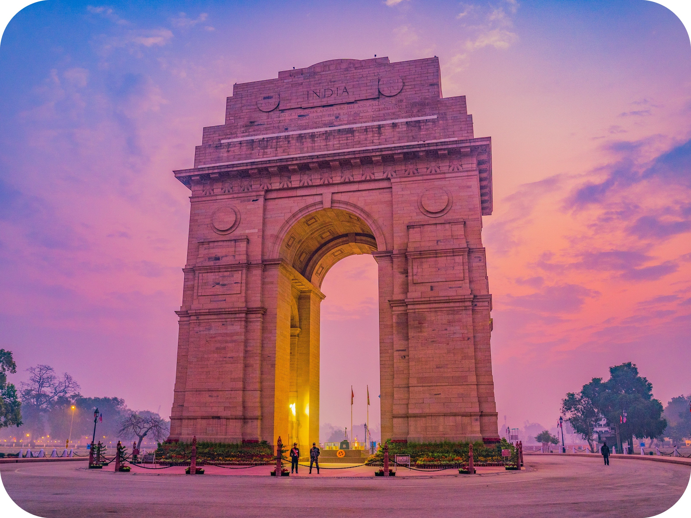

2D-3N
Delhi

India Gate
India gate is a ceremonial gate of Rajpath.
Day 1: Visiting India Gate and more.

Nizamuddin East
Nizamuddin East is an affluent residential colony.
Day 1: East Delhi and Markets.
Red Fort
Built by Mughal emperor Shah Jahan.
Day 2: Red Fort and Chatta Chowk.